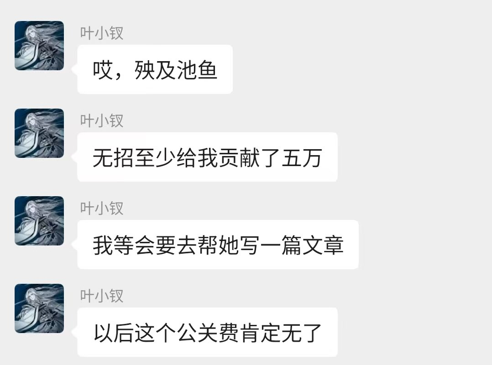

钉钉CEO陈宇森：未来的软件可能是日抛式的
*6 月 11 日，阿里巴巴宣布钉钉管理层调整：陈航卸任钉钉 CEO，92 年技术极客陈宇森接棒。以下内容摘录于我们在 2025 年 12 月和 2026 年 1 月上旬对陈宇森的两次访谈。
晚点：你们的基建更多是关注长尾需求，这是否意味着过去那种集中式、高成本的软件开发模式将发生改变？如何看待未来软件的组织形态和商业模式？
陈宇森：过去的软件开发成本高昂，必须服务成千上万人的共同需求才能支撑其商业模式。但现在的 AI 开发就像 3D 打印一样，你可以专门为自己或三五个朋友的少数特定场景需求去开发一款 agent，而且体验非常完善。门槛的降低使得开发的组织形态变得极其分散。展望未来十年，如果不进行自我革命，传统软件公司很可能会被 AI 公司全面取代。
未来的软件甚至可能是 “日抛型” 的，即代码仅为执行特定目的而精准生成，执行完毕后即刻销毁。虽然这种绝对的 “一次性代码” 状态在短期内难以完全实现，但目前创建一个受众小却能让特定人群感到好用的 agent，已经是一件极具价值的事情。
当然，这种长尾且分散的 AI 模式本质上是一种制造业，每一次执行都在消耗算力和 token，对能源的需求极大。只要 AI 能力还存在显著的层级差距且未形成完全垄断，token 的成本在短期内很难大幅降低。但由于 AI 作为先进生产力能全面渗透并重组人类社会的劳动力，其未来的需求几乎是没有上限的，这甚至可能会倒逼人类加速发展可控核聚变或太空数据中心等前沿科技。

*6 月 11 日，阿里巴巴宣布钉钉管理层调整：陈航卸任钉钉 CEO，92 年技术极客陈宇森接棒。以下内容摘录于我们在 2025 年 12 月和 2026 年 1 月上旬对陈宇森的两次访谈。
晚点：你们的基建更多是关注长尾需求，这是否意味着过去那种集中式、高成本的软件开发模式将发生改变？如何看待未来软件的组织形态和商业模式？
陈宇森：过去的软件开发成本高昂，必须服务成千上万人的共同需求才能支撑其商业模式。但现在的 AI 开发就像 3D 打印一样，你可以专门为自己或三五个朋友的少数特定场景需求去开发一款 agent，而且体验非常完善。门槛的降低使得开发的组织形态变得极其分散。展望未来十年，如果不进行自我革命，传统软件公司很可能会被 AI 公司全面取代。
未来的软件甚至可能是 “日抛型” 的，即代码仅为执行特定目的而精准生成，执行完毕后即刻销毁。虽然这种绝对的 “一次性代码” 状态在短期内难以完全实现，但目前创建一个受众小却能让特定人群感到好用的 agent，已经是一件极具价值的事情。
当然，这种长尾且分散的 AI 模式本质上是一种制造业，每一次执行都在消耗算力和 token，对能源的需求极大。只要 AI 能力还存在显著的层级差距且未形成完全垄断，token 的成本在短期内很难大幅降低。但由于 AI 作为先进生产力能全面渗透并重组人类社会的劳动力，其未来的需求几乎是没有上限的，这甚至可能会倒逼人类加速发展可控核聚变或太空数据中心等前沿科技。

之前写文抨击阿里离职长文女主幽素，力挺无招的某自媒体大V
在无招被请走之后，第一时间在群里表示以后挣不到无招的钱了😅
你现在知道之前为什么突然一夜之前冒出来一堆“力挺”无招的老登了吧
五万块钱就能出卖良心了 https://t.co/DPzh0GK14e
在无招被请走之后，第一时间在群里表示以后挣不到无招的钱了😅
你现在知道之前为什么突然一夜之前冒出来一堆“力挺”无招的老登了吧
五万块钱就能出卖良心了 https://t.co/DPzh0GK14e